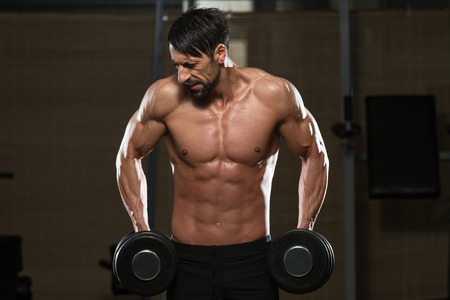

Los trapecios son músculos importantes para la estabilidad de los hombros y la movilidad de la parte superior del cuerpo. Además, desempeñan un papel crucial en muchos movimientos cotidianos, así como en ejercicios de entrenamiento de fuerza como el remo, los encogimientos de hombros, el press de hombros y las elevaciones laterales. Teniendo esto presente, cabe recalcar que no es necesario trabajar este ejercicio de forma aislada si eres principiante/intermedio, debido a que ya es estimulador bastante en grande variedad de ejercicios.
Como podrás notar este es el unico ejercicio de la lista. Eso es porque es el mejor y el único realmente necesario para tener unos trapecios fornidos. Las elevaciones de hombro es un gran ejercicio para un músculo muy importante de nuestro torso. Como ya dije en el encabezado, ejercitar los trapecios de forma aislada no es necesario, (a menos que seas un culturista de 100kg que ya le cuesta mucho trabajo desarrollar sus músculos) debido a que ya se los trabaja bastante en ejercicios como remo, dominadas, peso muerto etc.. Pero, si quieres trabajar los trapecios por alguna razón, elige este ejercicio.
